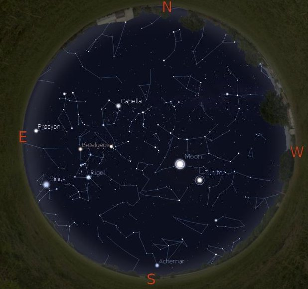
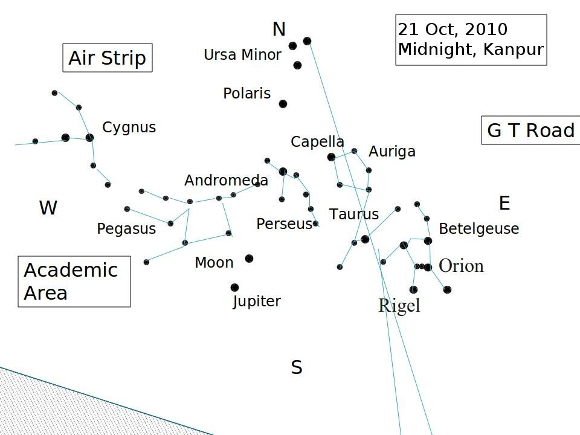

Objective :
To become familiar with the Constellations in the night sky using the software Stellarium. You will learn to identify the constellations at
different times (10 PM and 12 midnight) in the night, follow the steps-
- Step 1: Start the software Stellarium. Generate the sky map at 10 PM showing the constellation names.
- Step 2: The controls and resolution should be set such that (i) the 'Ground' is on (ii) the names of planets are listed, (iii) the entire sky is
visible in a single image, (iv) The cardinal points are set according to your own convenience.
- Step 3: Identify the different constellations visually on the virtual sky. Make a rough sketch of all the constellations on a piece of paper. The
sketch should show the locations of all the prominent stars in each constellation with a line joining them to roughly show the shape of the
constellation.

- Step 4: Make a rough drawing of the sky you actually observe manually on a piece of paper as shown below in figure. Start by labeling the directions, N, S, E, W. Specify the
positions of some prominent features, such as buildings, in your locality on the map. Now draw dots to show the stars you observe with the aim to
identify their constellation. Compare your map with that shown by Stellarium and hence identify the constellations directly in the sky.

- Step 5: Repeat above steps at 12 midnight.